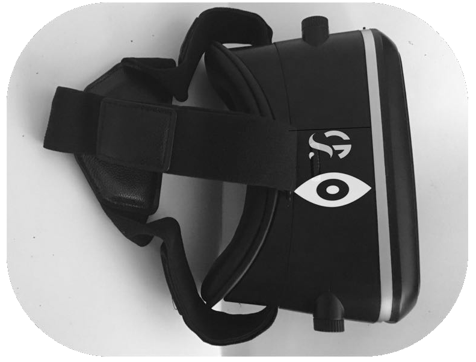
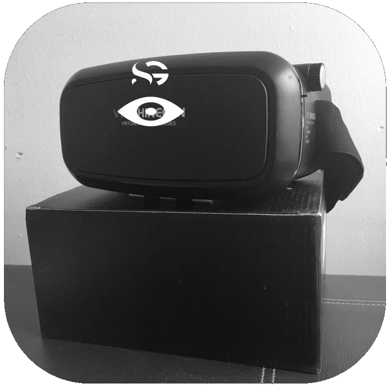
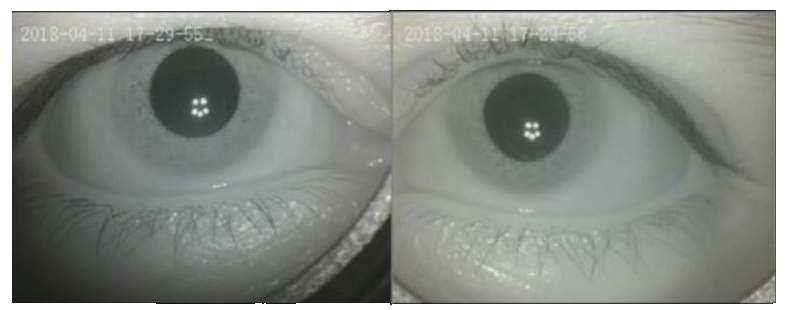
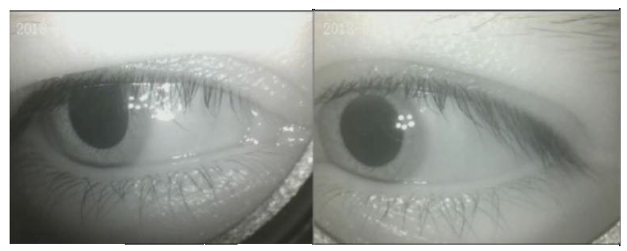

Auxiliar médico, no invasivo y portátil, equipado con inteligencia artificial, que busca mejorar el diagnóstico médico de vértigo y mareo.


Los SG consisten en unas gafas que permiten la visualización y grabación de los movimientos oculares.


Mejorar la precisión diagnóstica y el tratamiento posterior en casos de vértigo y/o mareo.
Establecer un protocolo clínico estandarizado para el abordaje y valoración del paciente.